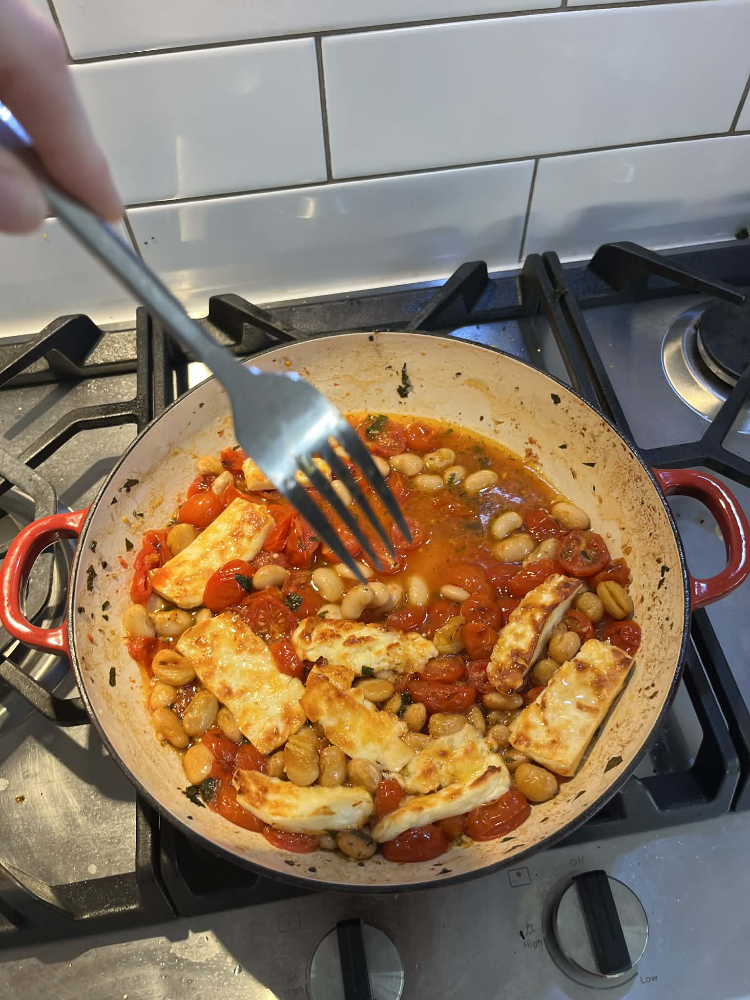

Set broiler to high heat, with a rack positioned in the upper third of the oven, 8 to 10 centimeters from the heat source.
In a large, ovenproof pan over medium heat, combine 2 tablespoons olive oil with the tomatoes, garlic, parsley, honey and oregano. Season with salt and pepper and cook, stirring frequently, until the tomatoes soften and release their juices, about 10 minutes.
Stir in the beans and cook until heated through, about 3 minutes. Taste and season with more salt and pepper if needed. Turn off the heat.
Arrange the halloumi slices on top of the tomato-bean mixture in the pan. Transfer the pan to the oven. Broil until the halloumi is golden and crispy on top, about 5 minutes, depending on the oven's broiler strength.
Drizzle generously with olive oil, squeeze the lemon half over the pan and add a light drizzle of honey. Garnish with parsley and serve immediately, with bread if desired.
